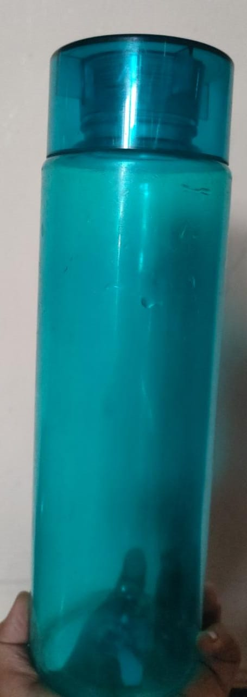
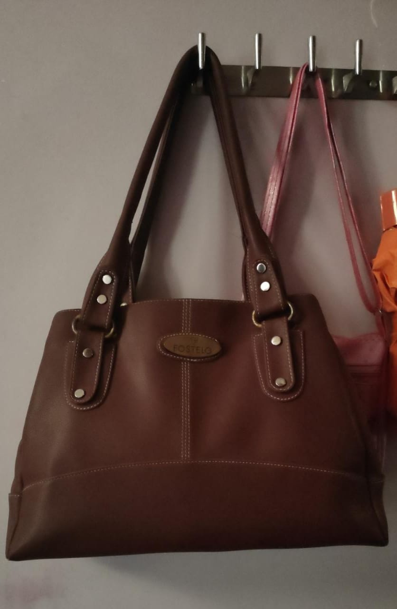

CASE STUDY GOOGLE LENS VS MOBILENET

vs
-
1. Test Image -
- 2. Test Image - 
- 3. Test Image -
- 4. Test Image -
- 5. Test Image - 
Output on GOOGLE LENS - Grey Mug
Output on Mobilenet Model - Coffee cup
Result -
GOOGLE LENS is more accurate
Output on GOOGLE LENS - Water Bottle
Output on Mobilenet Model - Spray Bottle
Result -
GOOGLE LENS is more accurate
Output on GOOGLE LENS - Molly doll
Output on Mobilenet Model - Teddy bear
Result -
GOOGLE LENS is more accurate
Output on GOOGLE LENS - universal statuary statue figures
Output on Mobilenet Model - Jigsaw Puzzle
Result -
GOOGLE LENS is more accurate
Output on GOOGLE LENS - women's catlin handbag
Output on Mobilenet Model - Postbag
Result -
GOOGLE LENS is more accurate
I have tested 5 images GOOGLE LENS have predicted 4 more of them very accurately. And MOBILENET was less accurately But according to my case study GOOGLE LENS is more Accurate.